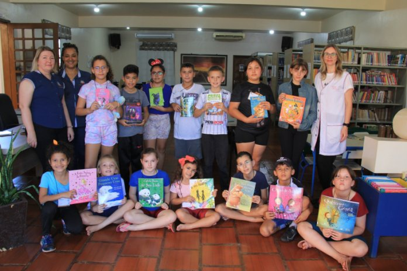

Categoria: Educação
Educar para Crescer
Reforço escolar, incentivo à leitura e acompanhamento pedagógico para crianças de 6 a 12 anos, em parceria com escolas públicas municipais da Zona Leste de São Paulo.
Objetivos
- Reduzir a defasagem escolar em língua portuguesa e matemática;
- Estimular o hábito de leitura desde a infância;
- Apoiar famílias no acompanhamento escolar dos filhos.
Público beneficiado
320 crianças de 6 a 12 anos, matriculadas em três escolas municipais parceiras.
Localização
São Miguel Paulista e Itaim Paulista, São Paulo — SP.
Indicadores e resultados (2025)
- Crianças atendidas
- 320
- Melhora média em leitura
- +38%
- Frequência escolar
- 96%